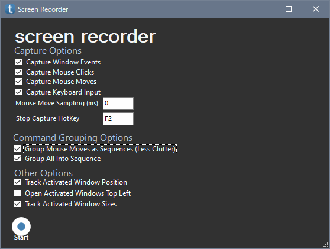

無料で使える RPA の taskt の使い方を紹介しています
Record ではユーザーの操作を記録し、命令に変換します。
しかし、有名どころの RPA のような高度な機能は持っていないので、あまり期待しすぎるのはよくありません。

| 項目 | 意味 |
|---|---|
| Capture Window Events | チェックを入れると、ソフトの画面に対する操作を記録します |
| Capture Mouse Clicks | チェックを入れると、マウスの操作を記録します マウス操作とは、クリックやドラッグ&ドロップです チェックを入れることを推奨します |
| Capture Mouse Moves | チェックを入れると、マウスカーソルの動きを記録します マウスの動きを再現する必要がなければ、チェックを外してください |
| Capture Keyborad Input | チェックを入れると、キーボードからの入力を記録します バージョン 3.2.0.0 ではバグがあるので、チェックを外してください |
| Move Move Sampling | マウスの動きを記録するときの、間隔です |
| Stop Capture Hotkey | 記録を中止するときのショートカットキーです 初期では F2 が割り当てられています |
| Group Mouse Moves as Sequences | チェックを入れると、もしマウスの動きを記録した場合、その命令がシーケンスの中に記録されます |
| Group All Into Sequence | チェックを入れると、変換された命令はシーケンスの中に記録されます チェックを入れるかどうかは任意です |
| Track Activated Window Position | チェックを入れると、ユーザーが操作するソフト (画面) の位置を記録します そのため、スクリプトを実行したとき、ソフト (画面) の位置が自動的に移動します チェックを入れることを推奨します |
| Open Activated Wndows Top Left | よくわかりません |
| Track Activated Window Sizes | チェックを入れると、ユーザーが操作するソフト (画面) の大きさを記録します そのため、スクリプトを実行したとき、ソフト (画面) の大きさが自動的に変化します チェックを入れることを推奨します |
| Start | クリックすると記録を開始します |